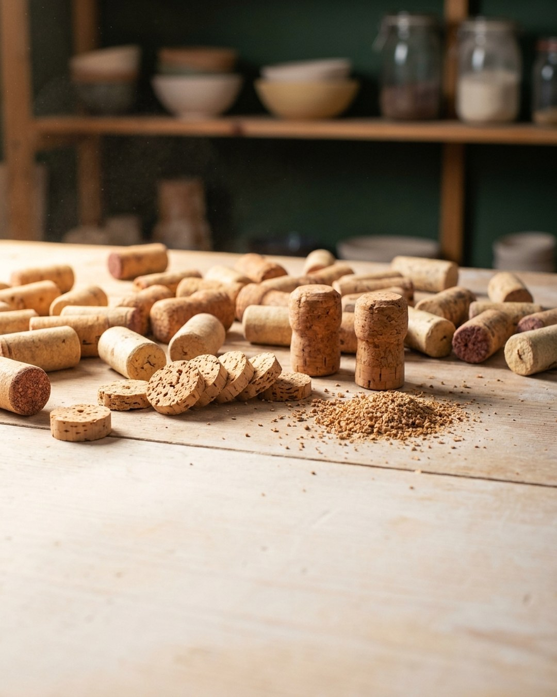
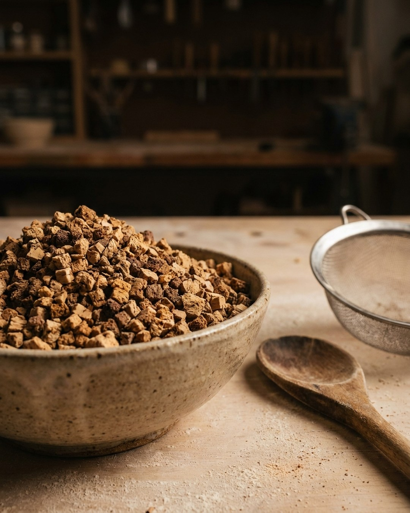
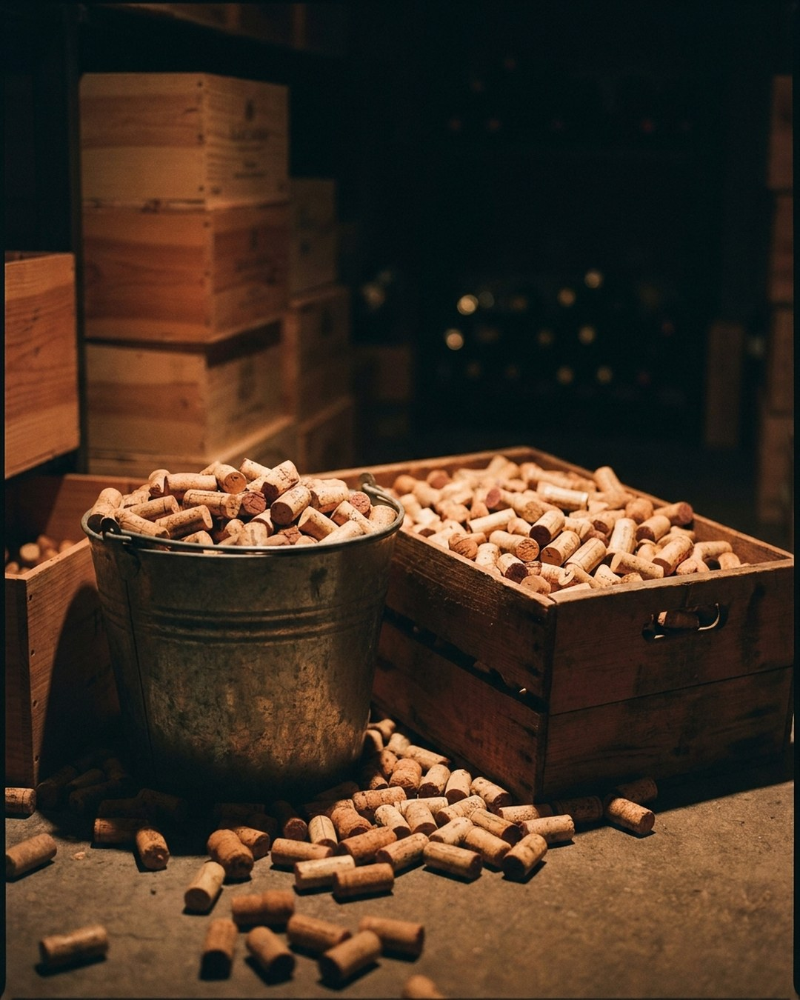

Todo el mundo guarda tapones de corcho en un cajón. Y casi todo el mundo cree dos cosas: que reciclarlos es tan fácil como echarlos a un contenedor, y que el corcho, como es natural, «se recicla solo». Las dos son falsas.
El corcho es uno de los materiales más nobles que pasan por tu cocina —tardó más de cuarenta años en existir— y a la vez uno de los peor recuperados. En este artículo separamos lo que es verdad de lo que se repite por inercia, con datos y fuentes. Y al final, qué puedes hacer tú con los tuyos.

Tapones de corcho usados. La mayoría acaba en un cajón; casi ninguno, reciclado.
Empecemos por lo que crees saber¿Verdadero o falso?
Cuatro frases que se dan por hechas sobre el corcho. Abre cada una y comprueba cuáles se sostienen.
El corcho reciclado vuelve a ser tapón.
Nunca vuelve a ser tapón. Lo dice el propio sector.
El tapón de corcho es compostable, va al contenedor marrón.
Depende del tapón, y ninguno está certificado como compostable.
El corcho es ignífugo.
Arde; de hecho su polvo se usa como combustible en la propia industria.
En España apenas se recicla el corcho.
Solo un 3 % de los tapones y aglomerado usados.
Vamos una por una. Empezando por la más incómoda.
El dato incómodo
España genera cada año unas 56.146 toneladas de tapones y aglomerado de corcho usados. ¿Cuánto se recicla? Un 3 %. El resto se reparte entre el vertedero (66 %) y la incineradora (31 %). No es una estimación de nadie con agenda: es el dato del Plan de gestión integral de los subproductos del sector corchero, el informe A8 del proyecto FUTURECORK, liderado por el Instituto Catalán del Corcho (2025).
Para poner el 3 % en contexto: el mayor programa de reciclaje de tapones del mundo, el de Amorim, recuperó 557 toneladas en todo el planeta en 2025. Es menos de lo que España sola podría recoger. Y no existe una estadística oficial de reciclaje de tapones en España: cuando leas «el corcho se recicla», pregúntate según qué dato.
de los tapones y aglomerado de corcho usados en España se recicla.
Informe A8 · FUTURECORK, 2025Cuatro cosas que se dicen del corcho y no se sostienen
«El corcho reciclado vuelve a ser tapón.»
no. El corcho recuperado va a pavimentos, aislamiento, superficies deportivas y objetos de diseño, nunca a un tapón nuevo, por razones sanitarias y de integridad. Lo reconoce el propio Amorim: «el corcho reciclado no se usa en la producción de nuevos tapones». Es downcycling honesto y valioso, pero downcycling.
«Es compostable, va al marrón.»
media verdad. El corcho natural es lignocelulósico, sí. Pero los tapones aglomerados y microaglomerados llevan resina de poliuretano, los sintéticos son plástico (contenedor amarillo), y no existe ningún tapón de corcho certificado como compostable según la norma EN 13432. Además, la suberina hace que se degrade muy despacio. No lo des por compostable sin más.
«El corcho es ignífugo.»
falso. El aglomerado de corcho se clasifica Euroclase E —de las últimas de la escala— y el polvo fino de corcho se quema como combustible en la propia industria. Lo que sí es cierto: aísla muy bien (baja conductividad térmica) y carboniza sin gotear. Aislar del calor y resistir al fuego no son lo mismo.
«España es el primer productor mundial.»
es el segundo. Portugal produce cerca del 50 % del corcho del planeta; España, en torno a un tercio. Aparece mal citado a menudo en material divulgativo español.

Corcho reciclado convertido en granulado: su destino real. De aquí no sale un tapón nuevo.
¿Para qué sirve entonces el corcho reciclado?
Que no vuelva a ser tapón no significa que no valga. El corcho recuperado entra en una cascada de usos de menor a mayor volumen: se muele en granulado, y de ahí sale a aislamiento térmico y acústico, pavimentos blandos, alcorques para el arbolado urbano, paneles, rellenos y objetos de diseño. Cada trituración reduce la granulometría, y el último escalón de esa cascada —el polvo más fino— acaba, hoy por hoy, quemándose como biomasa.
Por eso «el corcho es infinitamente reciclable» tampoco se sostiene: es una cascada descendente que termina en energía, no un bucle cerrado. Sabiéndolo, se comunica bien; sin saberlo, se cae en greenwashing.
Un material que tardó 43 años en existir
Merece la pena recordar de dónde viene lo que estás a punto de tirar. El alcornoque no se descorcha por primera vez hasta los 25 años. Ese primer corcho (bornizo) es irregular y no sirve para tapón. Hay que esperar al segundo descorche, y solo desde el tercero —hacia los 43 años del árbol— se obtiene corcho con calidad de tapón. Entre saca y saca deben pasar al menos 9 años por ley.
Es decir: ese tapón que se queda en un cajón tardó más de cuatro décadas en poder existir. Tirarlo sin más es, como poco, un desperdicio de tiempo ajeno.
Dónde llevar tus tapones
Si no quieres tirarlos, hay iniciativas que los recogen —pocas, y conviene escribirles antes de desplazarte, porque el mapa cambia rápido—. Estas están activas a fecha de publicación:
| Iniciativa | Qué es | ¿Admite a un particular? |
|---|---|---|
| Recycled Cork / Socyr | Recogida y reciclaje de tapones | Sí, es la más abierta a volúmenes pequeños |
| Corazón de Corcho (Vertidos Cero) | Contenedores en hostelería y salas de cata | Sobre todo establecimientos |
| FUTURECORK / ICSuro | Piloto de recogida local (Girona) en escalado | Modelo local; referencia del sector |
| Cork2Cork (Amorim) | Programa global vía cadenas hoteleras | B2B, no particular |
Nota: RECICORK, que aún se cita en muchos sitios, no da señales de actividad desde 2013. No lo tomes como programa vivo.
El problema no es el material, es la logística
Aquí está lo que casi nadie dice. El cuello de botella del corcho no es que falte material —sobran 56.000 toneladas al año— ni que no sirva para nada. El problema es la logística de recogida capilar: juntar tapón a tapón sale caro. Lo reconoce el propio sector: el programa BIOSOCYR admite que su logística «no es económicamente viable», y el piloto del Instituto Catalán del Corcho necesitó tejer una red de restaurantes, comercios y escuelas para recuperar dos toneladas en un año.
Esa es exactamente la escala en la que este material tiene sentido: local.
Un taller con tres bares aliados a veinte minutos resuelve su suministro sin logística. Una marca que quiera escalar choca con el mismo muro que la industria. Saber dónde está ese muro es, para nosotros, parte del trabajo.

Un cubo de tapones recogido en un bar: la escala local en la que el corcho recuperado tiene sentido.
De tirarlo a transformarlo
Vale, ¿y qué hago yo con los míos? Depende de cuántos tengas: con un puñado y una cuchilla ya se hacen cosas; con una caja, el corcho se vuelve material; con un cubo a la semana, toca montar un circuito. Lo hemos puesto todo —recetas, proporciones, seguridad y dónde conseguir más— en una guía práctica y gratuita.
La guía práctica del corcho, gratis
Qué hacer con tus tapones según cuántos tengas: recetas con proporciones y equipo, lo que NO se puede hacer, y el directorio. Con fuentes.
Descargar la guía →Preguntas frecuentes
¿En qué contenedor se tira el corcho?
¿De verdad se recicla el corcho en España?
¿El corcho reciclado vuelve a ser tapón?
¿Para qué sirve el corcho usado?
¿Dónde puedo llevar mis tapones?
Fuentes
Informe A8 y A15 · FUTURECORK / ICSuro (2025) · MITECO, Anuario de Estadística Forestal 2022 · Amorim Cork — Sustainability / Recycling · Pereira, H. (2015), BioResources 10(3), 6207-6229, DOI 10.15376/biores.10.3.6207-6229 · Ficha técnica de aglomerado de corcho (reacción al fuego, Euroclase E) · Piloto ICSuro Palafrugell–Cassà (2025).
¿Tu marca trabaja con un residuo local?
Si quieres convertir un material recuperado en relato y en negocio sin caer en greenwashing, el Diagnóstico 3D te mapea el camino.
Reservar Diagnóstico 3D →